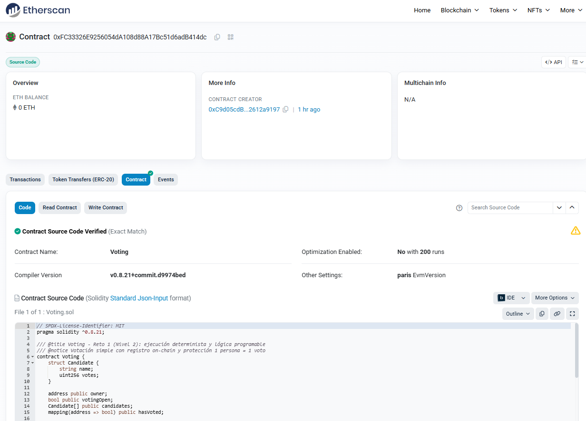

EVM · Gas · Contratos inteligentes — del bloque al contrato: ejecución determinista y lógica programable.
Este reto despliega un contrato de votación on-chain en Sepolia. Documentamos la address y la ABI para que en el siguiente reto (Reto 5) construyamos la dApp Web3 que permita votar desde el navegador (MetaMask).
Contrato desplegado y verificado en la red de pruebas Sepolia:
0xFC33326E9256054dA108d88A17Bc51d6adB414dcVer contrato verificado en Etherscan 🔗
vote(uint256 candidateId) — un voto por address.getCandidate(uint256 id) — devuelve (name, votes).closeVoting() — cierra la votación (solo owner).npm i
cp .env.example .env # Rellena RPC, PRIVATE_KEY y CANDIDATES
npm run compile
npm test
npm run deploy:sepolia # Copia la address arribacontracts/Voting.solscripts/deploy.jstest/Voting.t.jshardhat.config.js, package.jsondocs/index.html (esta página)docs/abi/Voting.json (ABI exportada)docs/img/screenshot.png (captura del contrato/verificador)Sube una captura y se mostrará aquí:
Conectaremos esta address y ABI desde el navegador (ethers.js + MetaMask) para permitir el voto.